Pets, owners, and rules for their relationship
Gregory S. DeLozier, PhD
| Pet | Owner | City |
|---|---|---|
| Casey | Alex | Kent |
| Heidi | Alex | Kent |
Alex moves to Akron. Where should that change live?

One owner can have many pets. Each pet has one owner.
http://127.0.0.1:5000/list
Manage Owners opens the owner pages.
CREATE TABLE owner (
id INTEGER PRIMARY KEY AUTOINCREMENT,
name TEXT NOT NULL,
city TEXT,
type_of_home TEXT
);id identifies the person. name describes
them.
owner_id| Value | Result |
|---|---|
NULL |
Rejected by NOT NULL |
| An absent owner’s identifier | Rejected by the foreign key |
| An existing owner’s identifier | Accepted |
Referential integrity: references point to existing records.
connection.execute("PRAGMA foreign_keys = ON")
fk = connection.execute(
"PRAGMA foreign_keys"
).fetchone()[0]
assert fk == 1A separate connection needs its own setting.
| Pet operation | Owner operation |
|---|---|
get_pets() |
get_owners() |
get_pet(id) |
get_owner(id) |
create_pet(data) |
create_owner(data) |
update_pet(id, data) |
update_owner(id, data) |
delete_pet(id) |
delete_owner(id) |
<select name="owner_id">
{% for owner in owners %}
<option value="{{ owner['id'] }}">
{{ owner['name'] }}
</option>
{% endfor %}
</select>Alex appears on screen. "1" travels with the
request.
cursor.execute(
"INSERT INTO pet(name, age, type, food, owner_id) "
"VALUES (?,?,?,?,?)",
(data["name"], data["age"], data["type"],
data.get("food", ""), data["owner_id"]),
)
connection.commit()SQLite checks the relationship during the insert.
| Check | Where it happens |
|---|---|
| Owner selection is blank | Flask route |
| Owner selection contains non-digits | Flask route |
| Referenced owner exists | SQLite |
Required fields are not NULL |
SQLite |
A dropdown helps selection. The database checks the relationship.
for pet in pets:
pet["owner_name"] = "<Unknown>"
for owner in owners:
if owner["id"] == pet["owner_id"]:
pet["owner_name"] = owner["name"]owner_name is for display. owner_id is
stored.
Select Sam in Casey’s owner dropdown, then save.
database.update_pet(10, {
"name": "Casey", "age": "9", "type": "dog",
"food": "kibble", "owner_id": "2"
})| Pet | Before | After |
|---|---|---|
Casey, id=10 |
Alex, owner_id=1 |
Sam, owner_id=2 |
Casey’s other fields stay the same. Both owners remain.
Alex still has pets: deletion fails.
Reassign those pets, then delete Alex: deletion succeeds.
| Test operation | Expected result |
|---|---|
| Create pet with absent owner | Constraint error |
| Delete owner who has pets | Constraint error |
| Remove pet, then delete owner | Success |
Two pets eat the same food.
What would change if food had its own table?
| Now | Proposed exercise |
|---|---|
pet.food contains text |
pet.food_id refers to a record |
| Form accepts a food name | Form selects an existing food |
Store the identifier that defines the relationship.
Let the database enforce whether that reference is valid.
Test both accepted changes and rejected changes.